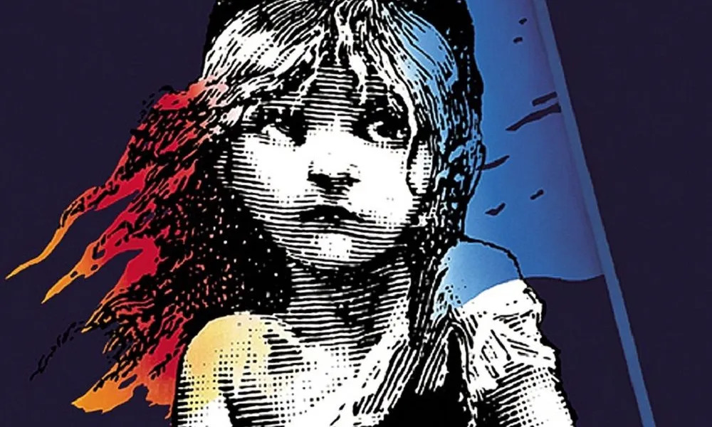

Los Miserables
Volver a la Pagina Principal

Los miserables (título original en francés: Les misérables) es una novela del poeta y escritor francés Victor Hugo publicada en 1862, considerada como una de las obras más importantes del siglo xix. La novela, de estilo romántico, plantea por medio de su argumento una discusión sobre el bien y el mal, sobre la ley, la política, la ética, la justicia y la religión. El autor confesó que se había inspirado en Vidocq —criminal francés que se redimió y acabó inaugurando la Policía Nacional francesa— para crear a los dos protagonistas y que la historia de su país le había inspirado para situar el contexto histórico. Por ese motivo, los personajes viven la Rebelión de junio (1832) y los posteriores cambios políticos. Además, el autor analiza los estereotipos de aquel momento y muestra su oposición a la pena de muerte. En su núcleo, al fin, la novela sirve como una defensa de los oprimidos sea cual sea el lugar o situación sociohistórica que vivan.
Es una historia conmovedora sobre la redencion, con personajes entrañables y un mensaje que sigue vigente hoy en dia.
Curiosidades del "Los Miserables"
- Personaje Similar: El personaje de Javert, el inspector de policía obsesionado con atrapar a Jean Valjean, fue inspirado por el personaje del inspector Vidocq, un famoso criminal convertido en detective de la vida real en el siglo XIX.
- Nombre de Cosette: El nombre "Cosette" es una forma diminutiva del francés "Collette", que significa "pequeña cosa". Refleja la situación de la joven Cosette como una niña pequeña que ha sufrido mucho.
- Campana de Notre-Dame: En la novela, la catedral de Notre-Dame de París tiene un papel importante. Esta misma catedral también es un elemento clave en otra famosa obra literaria, "El jorobado de Notre-Dame" de Victor Hugo.
- Objetos Simbólicos: Hugo utilizó objetos simbólicos a lo largo de la novela. Por ejemplo, el pan representa la necesidad básica y el sufrimiento humano, mientras que la luz de las velas puede simbolizar la esperanza.
- Preocupación por la Muerte: Victor Hugo tenía una profunda preocupación por la muerte y la vida después de ella. Esto se refleja en varios pasajes de la novela donde explora temas relacionados con la vida, la muerte y el más allá.